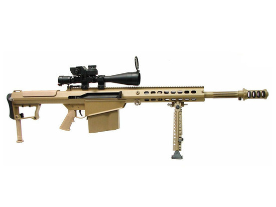
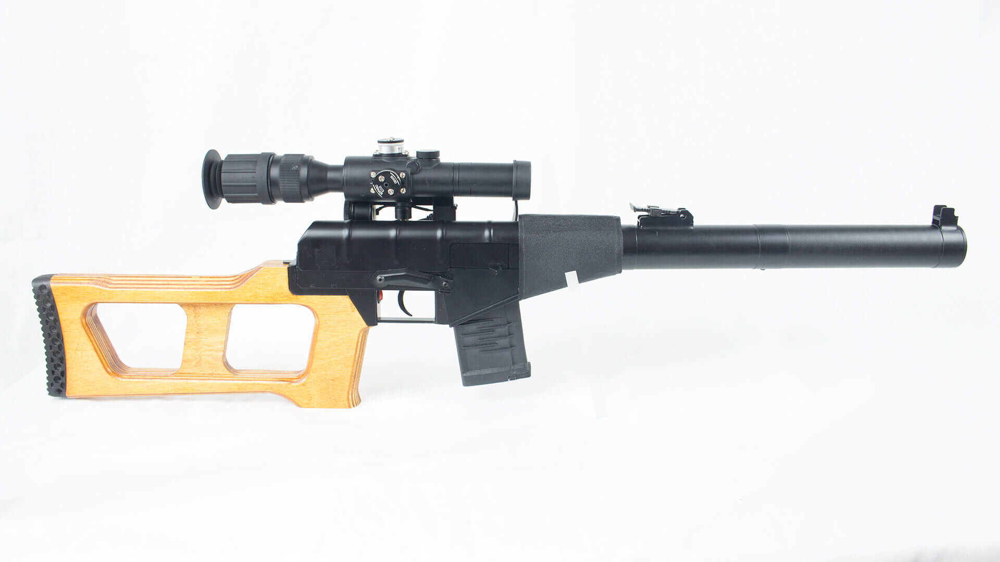
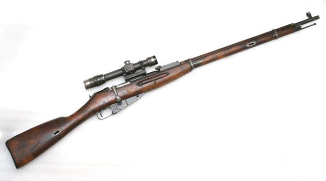
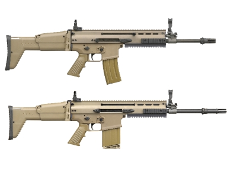
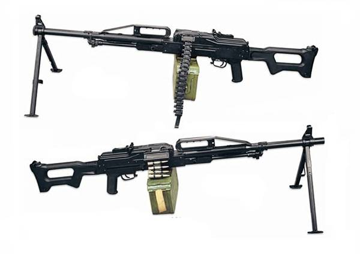
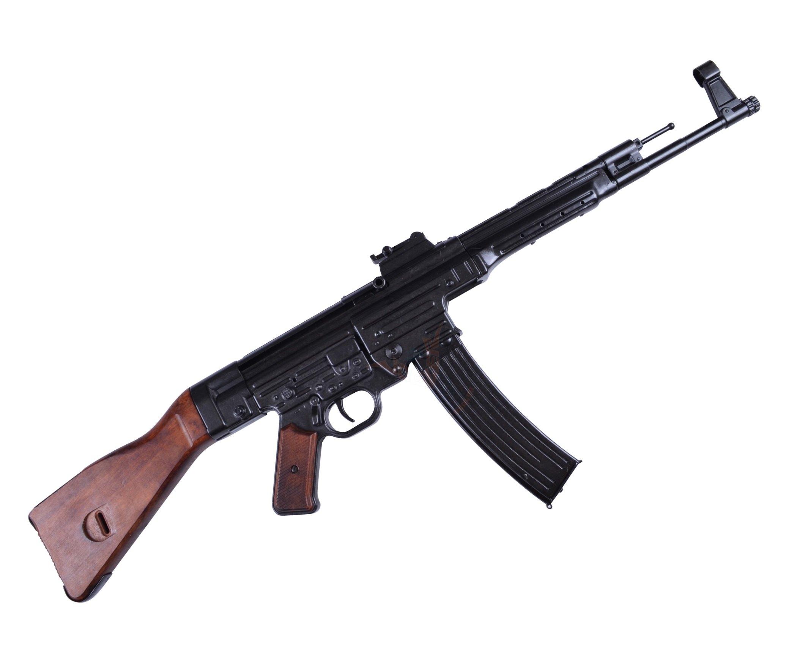
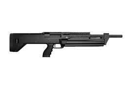
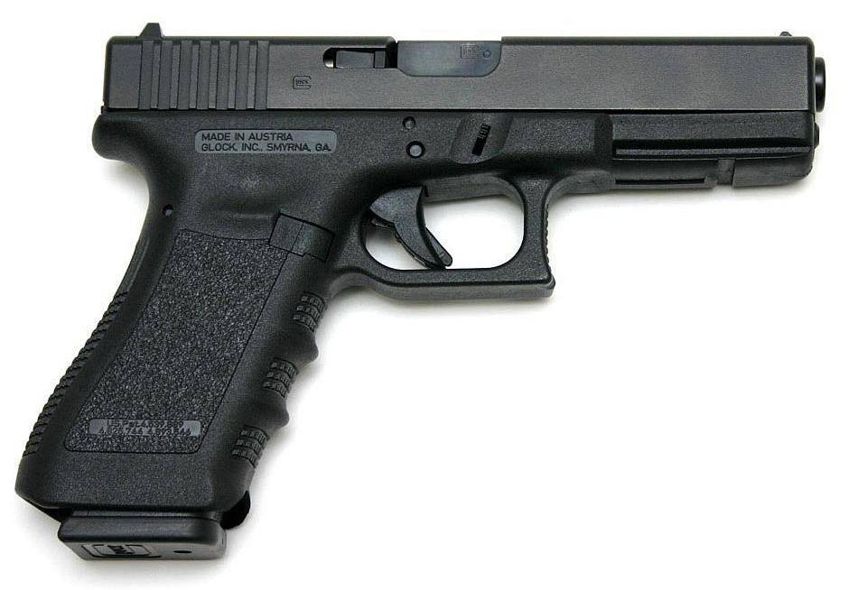
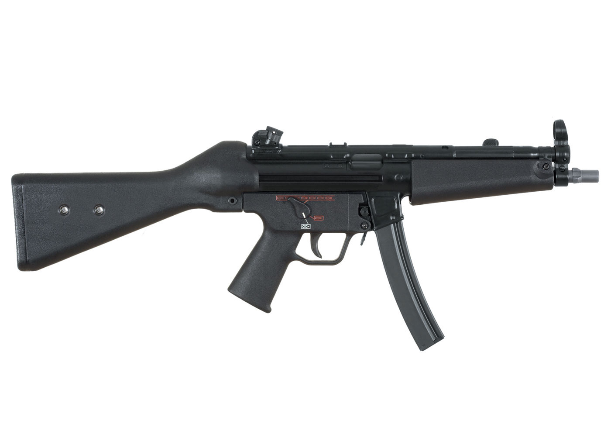

M107A1 BarrettBarret M107A1 — 12.7мм. Максимальная дальность стрельбы — около 1500 метров. Эта антиматериальная винтовка — предназначенная, в первую очередь, для уничтожения не живой силы, а техники противника.

ВСС "Винторез"ВСС — 9мм. Максимальная дальность стрельбы — 400 метров. Бесшумная снайперская винтовка для подразделений специального назначения.

Мосина.Винтовка Мосина - 7.62мм. Максимальная дальность стрельбы — 2000 метров. Русская 3-линейная магазинная винтовка образца 1891 года, принятая на вооружение Русской Империи в 1891 году.

SCAR-L(5.56) SCAR-H(7.62)FN SCAR — 5.56мм и 7.62мм. Максимальная дальность стрельбы - 900 метров. Оружейная система, разработанная американским подразделением бельгийской компании.

ПКП ""Печенег""Пулемёт «Печенег» — 7.62мм. Максимальная дальность стрельбы - 1500 метров. Российский единый пулемёт, разработанный на основе пулемёта Калашникова Модернизированного.

Sturmgewehr 44 (МР-43)Sturmgewehr 44 - 7.92мм. Максимальная дальность стрельбы - 600 метров. В середине второй мировой войны это оружие считалось самым мощным, так как имело высокую скорострельность пп(пистолет-пулемет) и мощь винтовки.

SRM Arms model 1216SRM 1216 - дробовик 12-го калибра с магазином на 16 патрон и стволом в 457 миллиметров. Отличается необычной конструкцией с полусвободным затвором. Оружие комплектуется подствольным барабанным магазином.

Glock 17Glock 17 - 9мм. Максимальная дальность стрельбы - 50 метров. В конструкции пистолета активно используется ударопрочный и термостойкий пластик (полиамид), что делает Glock 17 очень прочным и легким.

HK MP5Heckler & Koch MP5 — 9мм. Максимальная дальность стрельбы - 200 метров. семейство пистолетов-пулемётов, разработанных немецким производителем стрелкового оружия. Эксплортируется с 1966 года.